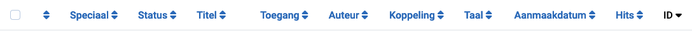
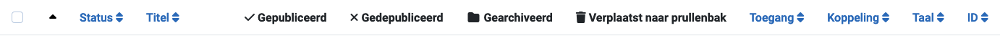
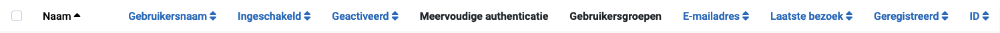

Kolomkoppen verschijnen in lijstweergaven om de aard van de informatie in die kolom aan te geven. De koppen variëren per component. Veel kolomkoppen kunnen worden gebruikt om de lijst op die kolom te sorteren, maar dit is niet altijd het geval. In de lijstweergaven van Categorieën worden de vier kolommen Status bijvoorbeeld niet gebruikt voor ordening, omdat alle items in die kolommen dezelfde status hebben.
Enkele voorbeelden
Kopteksten van de Artikelenlijst

Kopteksten van de Categorieënlijst

Kopteksten van de Gebruikerslijst

Sorteer op Kolom
Om de volgorde van de lijst te wijzigen, selecteer je het kolomlijst sorteerpictogram. In een kolom die niet wordt gebruikt voor sorteren, is dit een dubbele op/neer chevron
().
Voor de kolom die wordt gebruikt voor sorteren, is het ofwel een opwaartse chevron
() of een neerwaartse chevron
() om de huidige sorteerrichting aan te geven, oplopend of aflopend.
Enkele Veelvoorkomende Koppen
Selectievakje Om alle artikelen te selecteren, vink het vakje in de kolomkop aan.
De werkbalkknop 'Acties' wordt actief. Een actie kan worden toegepast op de
zichtbare items op de pagina. Het wordt niet toegepast op items op volgende pagina's
die niet zichtbaar zijn.
Ordening U kunt de volgorde van een artikel binnen een lijst wijzigen als
volgt:
Beperk de lijst tot te ordenen items in de filteropties, bijvoorbeeld
items in een geselecteerde taal of items van een geselecteerde auteur.
Selecteer het ordeningsicoon in de eerste
kolomkop om het actief te maken.
Selecteer een van de verticale ellipsis-iconen
die verschijnen wanneer ordening actief is en sleep het omhoog of omlaag om de
positie van die rij in de lijst te wijzigen.
Titel of Naam De titel van het item is meestal een link naar de
Bewerken pagina voor dat item.
ID Een uniek identificatienummer voor dit artikel. Het kan niet gewijzigd worden.